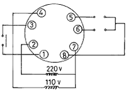
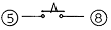
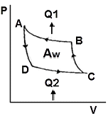
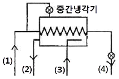
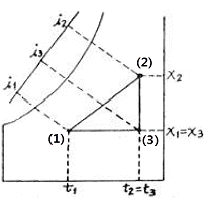
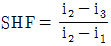
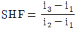
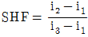
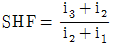

공조냉동기계기능사 (2008-02-03 기출문제)
1과목: 공조냉동안전관리
1. 방폭성능을 가진 전기기기의 구조 분류에 해당되지 않는 것은?
- 내압 방폭구조
- 유입 방폭구조
- 압력 방폭구조
- 자체 방폭구조
(정답률: 71%)

2. 산업안전기준상 작업장의 계단의 폭은 얼마 이상으로 하여야 하는가?
- 50㎝
- 100㎝
- 150㎝
- 200㎝
(정답률: 81%)
3. 다음 마스크 중 공기 중에 부유하는 유해한 미립자 물질을 흡입함으로써 건강 장해의 우려성이 있는 경우 사용하는 것은?
- 방진 마스크
- 방독 마스크
- 방수 마스크
- 송기 마스크
(정답률: 79%)
4. 교류 아크 용접기에서 감전을 방지하기 위해 전격방지기를 사용하는데 전격 방지기는 무엇을 조정하는가?
- 1차측 전류
- 2차측 전류
- 1차측 전압
- 2차측 전압
(정답률: 48%)
5. 다음 중 가스용접 작업시 가장 많이 발생되는 사고는?
- 가스누설에 의한 폭발
- 자외선에 의한 망막손상
- 누전에 의한 감전
- 유해가스에 의한 중독
(정답률: 70%)
6. 냉동제조의 시설 및 기술기준으로 적합하지 못한 것은?
- 냉동제조 설비 중 특정설비는 검사에 합격한 것일 것
- 냉동제조 시설 중 냉매설비에는 자동제어 장치를 설치할 것
- 제조설비는 진동, 충격, 부식 등으로 냉매가스가 누설되지 아니할 것
- 압축기 최종단에 설치한 안정장치는 2년에 1회 이상 작동시험을 할 것
(정답률: 85%)
7. 냉동장치 안전운전을 위한 주의사항 중 틀린 것은?
- 압축기와 응축기 간에 스톱밸브가 닫혀있는 것을 확인한 후가 아니면 압축기를 가동시키지 말 것
- 주기적으로 유압을 체크할 것
- 운전 휴지 중 실내온도가 빙점 이하로 내려갈 가능성이 있을 때는 응축기 및 수배관에서 물을 완전히 뽑아 동파를 방지할 것
- 압축기를 처음 가동 시에는 정상으로 가동되는 가를 확인 할 것
(정답률: 57%)
8. 다음 중 소화효과의 원리가 아닌 것은?
- 질식효과
- 제거효과
- 냉각효과
- 단열효과
(정답률: 78%)
9. 폭발 인화성 위험물 취급에서 주의할 사항 중 틀린 것은?
- 위험물 부근에는 화기를 사용하지 않는다.
- 위험물은 습기가 없고 양지바르고 온도가 높은 곳에 둔다.
- 위험물은 취급자 외에 취급해서는 안 된다.
- 위험물이든 용기에 충격을 주든지 난폭하게 취급해서는 안 된다.
(정답률: 93%)
10. 냉동기를 운전하기 전에 준비해야 할 사항으로 옳지 않은 것은?
- 압축기 유면 및 냉매량을 확인한다.
- 응축기, 유냉각기의 냉각수 입·출구밸브를 연다.
- 냉각수 펌프를 운전하여 응축기 및 실린더 자켓의 통수를 확인한다.
- 암모니아 냉동기의 경우는 오일히터를 기동 30~60분 전에 통전한다.
(정답률: 69%)
11. 다음 중 재해발생의 3요소가 아닌 것은?
- 교육
- 인간
- 환경
- 기계
(정답률: 58%)
12. 재해형태에서 물건에 끼워지거나 말려든 상태를 무엇이라고 하는가?
- 추락
- 충돌
- 협착
- 전도
(정답률: 93%)
13. 보일러 수위가 낮으면 어떤 현상이 일어나는가?
- 습증기 발생의 원인이 된다.
- 수면계에 물때가 붙는다.
- 보일러가 과열되기 쉽다.
- 습증기압이 높아 누설된다.
(정답률: 73%)
14. 공구와 그 사용법을 바르게 연결한 것은?
- 바이스 - 암나사 내기
- 그라인더 - 공작물 연마
- 리머 - 공작물 고정
- 핸드 탭 - 구멍 내면 다듬질
(정답률: 77%)
15. 보일러 운전 중 주시해야 할 사항으로 옳지 못한 것은?
- 연소상태
- 수면
- 압력
- 밀도
(정답률: 77%)
2과목: 냉동기계
16. 매설 주철관 파이프를 절단할 때 가장 많이 사용하는 것은?
- 원판 그라인더
- 링크형 파이프 커터
- 오스타
- 체인블럭
(정답률: 79%)
17. 액순환식 증발기에 대한 설명 중 알맞은 것은?
- 오일이 체류할 우려가 크고 제상 자동화가 어렵다.
- 전열을 양호하게 하기 위하여 수냉식에 주로 사용된다.
- 증발기 출구에서 액은 80% 정도이고 기체는 20% 정도까지 차지한다.
- 다른 증발기에 비해 전열작용이 80% 정도 양호하다.
(정답률: 77%)
18. 비체적의 단위로 맞는 것은?
- m3/kgf
- m2/kgf·s
- kgf/m3·℃
- m3/kgf·h
(정답률: 48%)
19. 고체 이산화탄소가 기화할 때 필요한 열은?
- 융해열
- 응고열
- 승화열
- 증발열
(정답률: 77%)
20. 저항이 5Ω인 도체에 2A의 전류가 1분간 흘렀을 때 발생하는 열량은 몇 J인가?
- 50
- 100
- 600
- 1200
(정답률: 35%)
21. 다음 회전식(Rotary) 압축기의 설명 중 틀린 것은?
- 흡입밸브가 없다.
- 압축이 연속적이다.
- 회전수가 100rpm 정도로 매우 적다.
- 왕복동에 비해 구조가 간단하다.
(정답률: 69%)
22. 냉동장치에서는 자동제어를 위하여 전자밸브가 많이 쓰이고 있는데 그 사용예가 아닌 것은?
- 액압축 방지
- 냉매 및 브라인 물의 흐름제어
- 용량 및 액면 조정
- 고수위 경보
(정답률: 63%)
23. 제빙공장에서 냉동기를 가동하여 30℃의 물 1ton을 24시간 동안에 -9℃ 얼음으로 만들고자 한다. 이 때 필요한 열량은 얼마인가? (단, 외부로부터 열침입은 전혀 없는 것으로 하고, 물의 응고잠열은 80kcal/kg으로 한다.)
- 420kcal/h
- 4,770kcal/h
- 9,540kcal/h
- 110,000kcal/h
(정답률: 45%)
24. 터보식 냉동기와 왕복동식 냉동기를 비교 했을 때 터보식 냉동기의 특징으로 맞는 것은?
- 회전수가 매우 빠르므로 동작밸런스나 진동이 크다.
- 보수가 어렵고 수명이 짧다.
- 소용량의 냉동기에는 한계가 있고 생산가가 비싸다.
- 저온장치에서도 압축단수가 적으므로 사용도가 넓다.
(정답률: 53%)
25. 회전식과 비교하여 왕복동식 압축기의 특징이 아닌 것은?
- 압축이 단속적이다.
- 진동이 크다.
- 크랭크 케이스 내부압력이 저압이다.
- 압축능력이 적다.
(정답률: 56%)
26. 냉동장치 내에 냉매가 부족할 때 일어나는 현상이 아닌 것은?
- 냉동능력이 감소한다.
- 고압이 상승한다.
- 흡입관에 상이 붙지 않는다.
- 흡입가스가 과열된다.
(정답률: 48%)
27. 가역사이클인 냉동기의 능력이 20RT, 증발온도 -10℃, 응축온도 20℃에서 작용하고 있다. 이 냉동기의 이론적인 소요 동력은 몇 마력인가?
- 17.74PS
- 11.98PS
- 10.76PS
- 9.87PS
(정답률: 42%)
28. 배관재료 부식방지를 위하여 사용하는 도료가 아닌 것은?
- 타르
- 아스팔트
- 광명단
- 아교
(정답률: 50%)
29. 파이프의 표시법 중 틀린 것은?
- 가스관은 G자로 표시한다.
- 파이프는 하나의 실선으로 표시한다.
- 수증기 관은 S자로 표시한다.
- 관을 절단하여 표시하는 경우에는 화살표방향으로 표시한다.
(정답률: 56%)
30. 다음 중 암모니아 불응축 가스 분리기의 작용에 대한 설명으로 옳은 것은?
- 분리되어진 공기는 장치 밖으로 방출된다.
- 암모니아 가스는 냉각되어 응축액으로 되어 유분리기로 되돌아간다.
- 분리기내에서 분리되어진 공기는 온도가 상승한다.
- 분리된 암모니아 가스는 압축기로 흡입되어진다.
(정답률: 42%)
31. 증발식 응축기 설계시 1RT당 전열면적은? (단, 응축온도는 43℃이다.)
- 1.2m2/RT
- 3.5m2/RT
- 6.5m2/RT
- 7.5m2/RT
(정답률: 38%)
32. 2원 냉동장치의 설명으로 볼 수가 없는 것은?
- -70℃ 이하의 저온을 얻는데 사용된다.
- 비등점이 높은 냉매는 고온측 냉동기에 사용된다.
- 저온측 압축기의 흡입관에는 팽창탱크가 설치되어 있다.
- 중간냉각기를 설치하여 고온측과 저온측을 열교환 시킨다.
(정답률: 36%)
33. 압축기가 냉매를 압축할 때 단열압축과정에서 변하지 않는 것은? (단, 외부에 열손실이 없는 표준 냉동사이클을 기준으로 할 것)
- 엔탈피
- 엔트로피
- 온도
- 압력
(정답률: 56%)
34. 압력과 온도를 동시에 낮추어 주는 곳은?
- 증발기
- 압축기
- 응축기
- 팽창밸브
(정답률: 62%)
35. 그림은 8핀 타이머의 내부회로도이다. ⑤, ⑧ 접점을 표시한 것은 무엇인가?


(정답률: 70%)
36. 브라인에 대한 설명 중 옳은 것은?
- 브라인은 냉동능력을 낼 때 잠열 형태로 열을 운반한다.
- 에틸렌 글리콜, 프로필렌 글리콜, 염화칼슘 용액은 유기질 브라인이다.
- 염화칼슘 브라인은 그 중에 용해되고 있는 산소량이 많을수록 부식성이 적다.
- 프로필렌 글리콜은 부식성, 독성이 없어 냉동식품의 동결용으로 사용된다.
(정답률: 65%)
37. 강관의 나사이음용 이음쇠 중 벤드의 종류에 해당하지 않는 것은?
- 암수 롱 벤드
- 45° 롱 벤드
- 리터언 벤드
- 크로스 벤드
(정답률: 51%)
38. 다음의 내용 중 잘못 설명된 것은?
- CFC 후레온 냉매는 안전하므로 누출되어도 환경에 전혀 문제가 없다.
- 물을 냉매로 하면 증발온도를 0℃ 이하로 운전하는 것은 불가능하다.
- 응축기 내에 들어 있는 불응축 가스는 전열효과를 저하시킨다.
- 2원 냉동장치는 초저온 냉각에 사용되는 것이다.
(정답률: 65%)
39. 다음은 역 카르노 사이클에서 냉동장치의 각 기기에 해당되는 구간이 바르게 연결된 것은?

- B→A : 응축기
C→B : 팽창변
D→C : 증발기
A→D : 압축기 - B→A : 증발기
C→B : 압축기
D→C : 응축기
A→D : 팽창변 - B→A : 응축기
C→B : 압축기
D→C : 증발기
A→D : 팽창변 - B→A : 압축기
C→B : 응축기
D→C : 증발기
A→D : 팽창변
(정답률: 67%)
40. 다음 중 단수 릴레이의 종류에 속하지 않는 것은?
- 단압식 릴레이
- 차압식 릴레이
- 수류식 릴레이
- 온도식 릴레이
(정답률: 48%)
41. 2단압축 1단 팽창 사이클에서 중간냉각기 주위에 연결되는 장치로서 적당하지 못한 것은?

- (1) 수액기로부터
- (2) 고압압축기로
- (3) 응축기로부터
- (4) 증발기로
(정답률: 58%)
42. 다음 설명 중 맞는 것은?
- 윤활유와 혼합된 후레온 냉매는 오일 포밍현상이 일어나기 쉽다.
- 윤활유 중에 냉매가 용해하는 정도는 압력이 낮을수록 많아진다.
- 윤활유 중에 냉매가 용해하는 정도는 온도가 높을수록 많아진다.
- 장치내의 온도가 낮을수록 동 부착현상을 일으킨다.
(정답률: 47%)
43. 가스관의 맞대기 용접을 할 때 유의사항 중 틀린 것은?
- 관 단면을 V형으로 가공한다.
- 관을 지지대에 올려놓고 편심이 되지 않게 고정한다.
- 관의 중심축을 맞춘 후 3~4개소에 가접을 한다.
- 가접 후 본용접은 하향 용접보다 상향 용접을 하는 것이 좋다.
(정답률: 52%)
44. 1냉동톤(한국 1RT)이란?
- 65kcal/min
- 3320kcal/h
- 1.92kcal/sec
- 55680kcal/day
(정답률: 80%)
45. 흡수식 냉동장치에서 냉매인 물이 5℃ 전후의 온도로 증발하고 있다. 이때 증발기 내부의 압력은?
- 약 7mmHg(933Pa)·a 정도
- 약 32mmHg(4266Pa)·a 정도
- 약 75mmHg(9999Pa)·a 정도
- 약 108mmHg(14398Pa)·a 정도
(정답률: 50%)
3과목: 공기조화
46. 실내에 있는 사람이 느끼는 더위, 추위의 체감에 영향을 미치는 수정 유효온도의 주요 요소는?
- 기온, 습도, 기류, 복사열
- 기온, 기류, 불쾌지수, 복사열
- 기온, 사람의 체온, 기류, 복사열
- 기온, 주위의 벽면온도, 기류, 복사열
(정답률: 78%)
47. 틈새바람량 Q[m3/h], 실내온도 tr, 외기온도 t0라 할 때 틈새바람에 의한 현열부하를 구하는 식은?
- 0.24Q(tr-to)
- 597Q(tr-to)
- 717Q(tr-to)
- 0.29Q(tr-to)
(정답률: 28%)
48. 온수 베이스 보드 난방(hot water base board heating)에서 가열면의 공기유동을 조절하기 위한 장치는?
- 라지에터
- 드레인 밸브
- 그릴
- 서모스텟
(정답률: 40%)
49. 다음의 냉방부하 중 현열부하만 생기는 것은?
- 인체
- 틈새바람
- 외기
- 유리창
(정답률: 46%)
50. 다음 공조방식 중 에너지손실이 가장 큰 공조방식은?
- 2중 덕트방식
- 각층 유닛방식
- F.C 유닛방식
- 유인 유닛방식
(정답률: 58%)
51. 송풍기 오버로드(over load)가 일어나는 요인은?
- 풍량이 과잉인 경우
- 풍량이 과소인 경우
- 풍량이 적정인 경우
- 장치저항이 적은 경우
(정답률: 77%)
52. 다음 중 건조공기의 구성요소가 아닌 것은?
- 산소
- 질소
- 수증기
- 이산화탄소
(정답률: 68%)
53. 5℃인 450kg/h의 공기를 65℃가 될 때까지 가열기로 가열하는 경우 필요한 열량은 몇 kcal/h인가? (단, 공기의 비열은 0.24kcal/kg·℃이다.)
- 6,480
- 6,490
- 6,580
- 6,590
(정답률: 43%)
54. 다음은 증기난방과 온수난방을 비교한 것이다. 틀린 것은?
- 증기난방보다 온수난방의 쾌적도가 더 좋다.
- 증기난방보다 온수난방의 취급이 더 용이하다.
- 온수난방보다 증기난방의 가열 시간이 더 빠르다.
- 온수난방보다 증기난방의 설비비가 더 많이 든다.
(정답률: 66%)
55. 냉동기의 증발기에서 공조기의 코일로 공급되는 것은?
- 냉매
- 냉수
- 냉각수
- 냉풍
(정답률: 30%)
56. 다음 설명 중 개별식 공기조화방식으로 볼 수 있는 것은?
- 사무실 내에 패키지형 공조기를 설치하고, 여기에서 조화된 공기는 패케이지 상부에 있는 취출구로 실내에 송풍한다.
- 사무실 내에 유인유닛형 공조기를 설치하고, 외부의 공기조화기로부터 유인유닛에 공기를 공급한다.
- 사무실 내에 팬코일 유닛형 공조기를 설치하고, 외부의 열원기기로부터 팬코일 유닛에 냉온수를 공급한다.
- 사무실 내에는 덕트만 설치하고, 외부의 공기조화기로부터 덕트 내에 공기를 공급한다.
(정답률: 57%)
57. 난방부하가 3,500kcal/h인 방의 온수방열량의 방열면적은 몇 m2인가?
- 5.4
- 6.6
- 7.8
- 8.9
(정답률: 48%)
58. 다음 중 펌프의 종류에서 작동부분이 왕복운동을 하는 왕복식 펌프는?
- 벌류트 펌프
- 기어펌프
- 플런저펌프
- 베인펌프
(정답률: 42%)
59. 다음의 공기 선도에서 (2)에서 (1)로 냉각, 감습을 할 때 현열비(SHF)의 값을 구하면 어떻게 표시되는가?





(정답률: 45%)
60. 다음 중 환기의 효과가 가장 큰 환기법은?
- 제 1종 환기
- 제 2종 환기
- 제 3종 환기
- 제 4종 환기
(정답률: 74%)